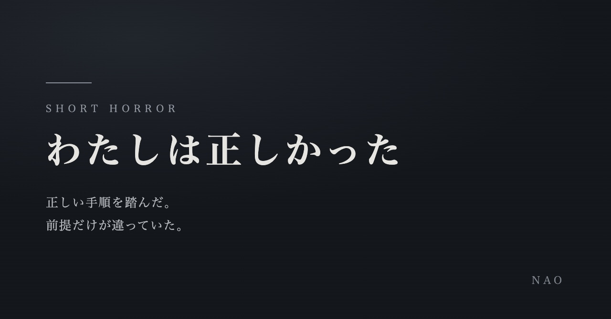
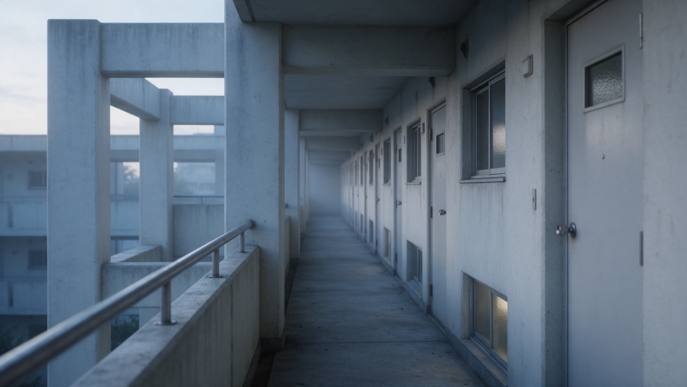
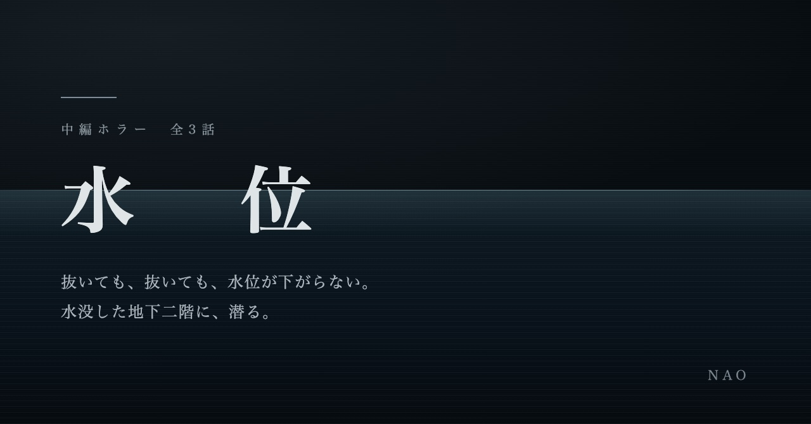

短編集・一話完結
わたしは正しかった
正しい手順を踏んだ。前提だけが違っていた。
工場の安全手順。実家の片づけ。塾講師の昇進。制度どおりに、善意で、正しく動いた結果だけが残る短編集です。超常現象は一切出てきません。
エブリスタで読む →日常・心理ホラー
壁の向こうの泣き声。手順書に書かれていない理由。抜いても下がらない水位。
怪物は出てきません。出てくるのは、正しく動いているはずの人と、正しく回っているはずの決まりです。
代表作

壁の向こうで、あの子が泣いている。
わたしは、記録をつけはじめた。
築四十年の団地に越してきた坂上深雪は、明け方、壁の向こうから子どもの泣き声を聞いた。低い女の声。短く区切られた言葉。そして、どん、という音。
隣の四〇四号室に住んでいるのは、挨拶を返さない若い母親と、六歳の娘だった。誰かが見ていなければならない。深雪はノートを買い、日付と時刻と、聞こえた音を書き留めはじめる。
※ 各サイトで同じ本文を掲載しています。読みやすいところからどうぞ。
長い話の前に作風を知りたい方へ。どれも一話完結、または三話で読み終わります。

正しい手順を踏んだ。前提だけが違っていた。
工場の安全手順。実家の片づけ。塾講師の昇進。制度どおりに、善意で、正しく動いた結果だけが残る短編集です。超常現象は一切出てきません。
エブリスタで読む →
抜いても、抜いても、水位が下がらない。
一時間に百十ミリ。市営の地下駐車場が十分で満水になった。潜水士が入ったのは、天井のある水だった。海なら上に逃げられる。ここでは、上は壁だ。
カクヨムで読む →これまでに書いた連作です。作風の幅としてご覧ください。いずれも成人向けの表現は含みません。

冷たい指先と、永遠の微熱
廃リゾートホテルに惹かれていく主人公。誰もいないはずの館の奥、青白い月光の中に佇む「彼女」から目が離せなくなる——。触れてはいけないものに触れてしまう、静かで甘い恐怖の物語。
第1話から読む →
最近の投稿はこちら。最新話はnoteで随時更新されます。
※ この一覧は note の更新に合わせて自動で反映されます(反映までに数時間かかる場合があります)。最新話は必ずnoteでご確認ください。